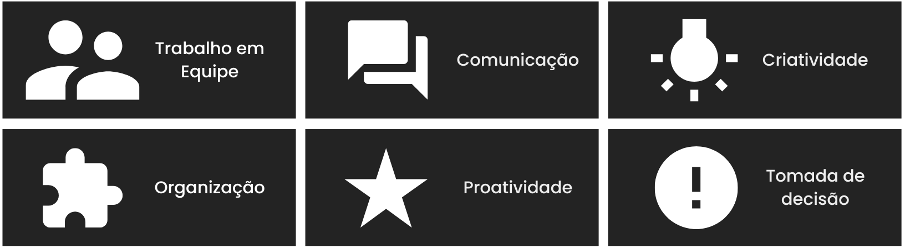

I'm Mayara
- 26 anos
- mayaracastro.msc@hotmail.com
- Paulínia-SP
- < GitHub >
- < LinkedIn >
< Habilidades >

< Formações >
ANÁLISE E DESENVOLVIMENTO DE SISTEMAS
UNINTER | FEV/2023 - 2025
MBA EM VENDAS, NEGOCIAÇÃO E RESULTADO DE ALTA PERFORMANCE
PUC-RS | 2020 - 2022
ADMINISTRAÇÃO
PUC-CAMPINAS | 2016 - 2019
< Experiências >
ASSISTENTE ADMINISTRATIVO
PUC-CAMPINAS | 2021 - 2022
Responsável por gerenciar novas propostas de cursos de especialização e novos processos seletivos para ingresso de alunos. Além disso, atuei na implementação do sistema Lyceum, identificando pontos de melhorias e de desenvolvimento.
AUXILIAR DE ESCRITÓRIO
PUC-CAMPINAS | 2015 - 2021
Responsável pelo desenvolvimento da grade horária do curso de Direito da PUC-Campinas, bem como a negociação e atribuição de aulas aos docentes do curso. Ainda, atuei no departamento de Ingresso Discente onde fui responsável pelo gerenciamento do processo de transferência interna e externa, e apoio ao vestibular.